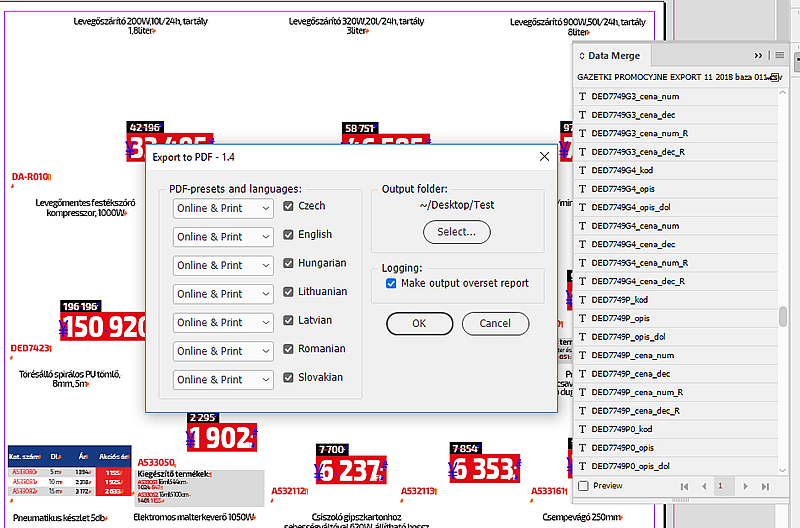
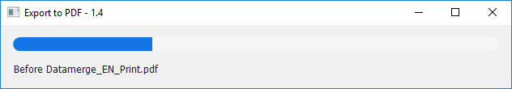
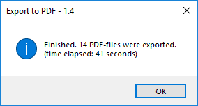
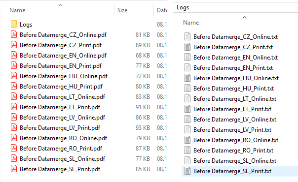
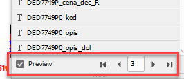
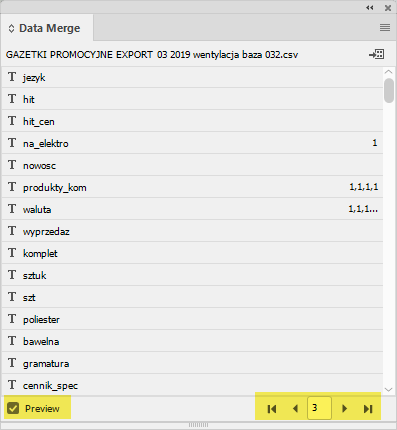
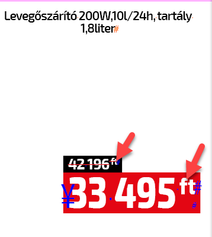
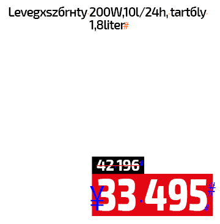

Export to PDF using Data Merge
The text below is a little confusing: in the essence, it’s an extract from the talk between me and my client. But I think it’s an interesting case of solving a problem that I thought, at the start, was impossible to solve due to limitations in the scripting DOM relating to the Data Merge feature.
I wrote this script — to be more exact a set of scripts — a couple of years ago so I don’t remember details. The script was used for creating 7 language versions of a catalog: each record corresponded to a specific language. But the client had specific requirements for the script. Basically, it should switch to each record one by one, hide/show certain layers, and export two PDFs: one for print another for online. (7 languages x 2 PDF types x 16 pages = a lot of time to do this manually and besides InDesign often crashed during those exports).
However, record 3 — for Hungarian — was a special case: after switching to this record but before PDF export, the script should run another script that applied some formatting to prices in Hungarian forints. Theoretically, the scenario was: turn the Preview check box on and switch to the necessary record, but in practice, these two features turned out to be unavailable to scripting. So, as a workaround, I split the process into two stages:
- for all languages except for Hungarian, it exports from Data Merge
- for Hungarian, it exports from the document



The output

The problem is that for the last language in the chain — Hungarian — it should execute another script (via doScript) which runs a few find-change queries. (Both scripts should be located in the same folder.) But before that I should activate the record 3 (for Hungarian).
Manually, I just turn the Preview check box on and select record 3, but I can’t find the scripting equivalent for these two steps.

It’s impossible to turn on/off the preview button and switch records by the script as you can do in the Data Merge panel. This makes scripting Data Merge almost impossible. As a workaround, in this script I had to export pdf for one language from the Document object instead of the doc.dataMergeProperties object.

Here I posted the script so, if interested, you can play with it.
The correct result for Hungarian should look like so:

instead of this (missing 'ft')

Below is the scenario for the script:
Basically, it needs to do the following for each of the languages:
1. CZ:
a) Switch data merge to "1" (Czech language)
b) Export the PDF using export preset for Online.
c) Export the PDF using export preset for Print.
2. EN:
a) Switch data merge to "2" (English language).
b) Export the PDF using export preset for Online.
c) Export the PDF using export preset for Print.
3. LT:
a) Switch data merge to "4" (Lithuanian language).
b) Export the PDF using export preset for Online.
c) Export the PDF using export preset for Print.
4. LV:
a) Switch data merge to "5" (Latvian language).
b) Export the PDF using export preset for Online.
c) Export the PDF using export preset for Print.
5. RO:
a) Switch data merge to "6" (Romanian language).
b) Export the PDF using export preset for Online.
c) Export the PDF using export preset for Print.
6. SK:
a) Switch data merge to "7" (Slovakian language).
b) Export the PDF using export preset for Online.
c) Export the PDF using export preset for Print.
7. HU
a) Switch data merge "3" (Hungarian language)
b) Then it needs to run a script "Hungarian prices"
c) Export the PDF using export preset for Online.
d) Export the PDF using export preset for Print.
Each file needs to be saved into a defined folder, and have a name that looks like this: {indd-file-name}_{lang}_{print/online}.pdf